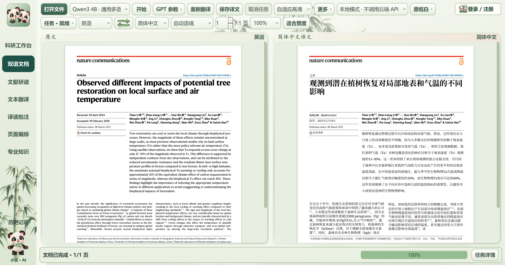

双语文档
逐页翻译与对照阅读，保留原文位置；正文、图名与表格分别适配，明确显示完成与未完成状态。
10 页样本的 160 个识别正文区域均有输出；65 个多行段落的末尾偏差中位数由 7.60 降至 0.26 磅。仍有 46 个图表或公式词项需核对，个别图中位图文字可能未识别。

本次最终候选 v12 的真实窗口内容，一页缓存复用测试；右侧机器翻译为对原文的改编。来源：Yitao Li 等，Nature Communications（2025），原文，© 作者，CC BY 4.0。点击图片查看原始截图。
WINDOWS 桌面客户端 · 1.43.9
从原文与译文对照，到术语、图表和笔记。
在同一张阅读书桌上，理解每一段内容。
项目介绍与学习资料公开 · 核心代码暂不公开
需要客户端、技术交流或合作：3426962511@qq.com
2026-10-27：三份文档13、12、16页完成补译和版面检查；最终打包客户端另行完成12/12页。自动检查不替代科学语义核读。下方1.43.4指标为历史记录。
原始窗口内容截图，未修改像素，不含Windows标题栏；截图中独立任务仍在处理中，完成数取自同次任务记录。
来自2026-10-25授权的DeepL在线样本测试；不等于所有文档或全部语义已认证。查看测试条件 →
READ · UNDERSTAND · ORGANIZE
从整篇文献到一个术语，让翻译、核对和理解自然衔接。
逐页翻译与对照阅读，保留原文位置；正文、图名与表格分别适配，明确显示完成与未完成状态。
原文、文献助手与选段译文并排，默认约60% / 22% / 18%，手动调整后记住你的阅读习惯。
释义、词性、搭配、语法和双语例句，与概念解释、机理和应用分区展示，方便回到上下文核对。
点击图像查看全图，支持缩放和拖动；已取得的网页图文与滚动位置可以保留。
阅读中选择文字、添加标记或笔记，通过页面编排与科研工作台入口组织资料和任务草稿。
检查翻译完整性、链接、公式与版面，保存成功缓存和适用案例；持续保留需要人工核读的事项。
ACTUAL DESKTOP · USER PROVIDED
原始桌面截图。点击完整查看，滚轮缩放，拖动细节。
用户于2026-10-26提供的正式客户端1.43.4桌面截图，真实论文原文与译文，115%缩放，底部显示16/16页完成。原图直接复制，未重绘、拼接、裁切或修改像素。
截图顶部当前选择为Google翻译；仅凭当前下拉框不能认定这份已有译文由Google生成。下方DeepL统计来自独立的2026-10-25测试记录。
保留正式客户端的熊猫、竹叶主题、完整工具栏与任务状态。展示第一页面，文档16/16页完成。
此前使用人工演示资料的六张离屏截图已从当前展示撤下；专业知识、图片查看及研读页面暂不以演示内容替代实机截图。
查看原图来源与文件哈希 ↗TESTED SAMPLE · 2026-10-25
完整性、版面与语义分开判断。保留数据，也保留限制。
491条为句段记录，包含标题与标签。8个原生标签复核对象已逐项检查，不是8条待译内容。
MEASURED TIME
客户端全过程为390.156秒，包括启动、显示与测试操作。
混合缓存条件：460条成功缓存命中，31条新翻译；同机还有构建与迁移任务。
不将此数据作为全新20页文档的首译速度，不对不同条件直接计算加速倍数。
| 页 | 已渲染区域 | 未完成 | 原文 / 译文链接 | 正文磅数 |
|---|---|---|---|---|
| 1 | 15 | 0 | 38 / 38 | 9.2–9.2 |
| 2 | 9 | 0 | 34 / 34 | 9.0–9.0 |
| 3 | 64 | 0 | 17 / 17 | 9.4–9.4 |
| 4 | 22 | 0 | 26 / 26 | 9.0–9.0 |
| 5 | 7 | 0 | 1 / 1 | 10.6–10.6 |
| 6 | 33 | 0 | 23 / 23 | 9.0–9.0 |
| 7 | 7 | 0 | 9 / 9 | 10.2–10.2 |
| 8 | 18 | 0 | 2 / 2 | 9.8–9.8 |
| 9 | 7 | 0 | 4 / 4 | 10.2–10.2 |
| 10 | 17 | 0 | 8 / 8 | 9.0–9.0 |
| 11 | 6 | 0 | 4 / 4 | 10.2–10.2 |
| 12 | 7 | 0 | 4 / 4 | 9.0–9.0 |
| 13 | 7 | 0 | 0 / 0 | 11.0–11.0 |
| 14 | 8 | 0 | 1 / 1 | 9.8–9.8 |
| 15 | 11 | 0 | 27 / 27 | 11.0–11.0 |
| 16 | 2 | 0 | 63 / 63 | None–None |
样本图12中的气象 station 译为“基站”，更贴合领域的用语是“台站/观测站”；作者贡献中的姓名仍需对照原文。原图保留不代表其中的文字逐字翻译。自动通过不等于专业语义完全准确，也不保证所有未来PDF。
A CONNECTED READING FLOW
确认资源、服务与语言设置。
保留原件，查看翻译和排版进度。
检查术语、公式、图表与来源。
导出译文，回看批注与笔记。
BEFORE YOU START
当前公开项目介绍、截图、结果与静态展示页。核心代码、exe、安装包、模型与账户服务暂不上传。需要使用或交流，请联系3426962511@qq.com。
当前是静态展示网页，不提供文档上传、账号登录或在线翻译。在线与本地翻译入口位于Windows客户端中。
它保存问题记录、成功译文缓存并复用受约束的修复规则。新类型问题仍需完善算法与复验，不能称为云模型自行训练或任意自我改写。
页数之外，文字密度、字体、表格、网络和新句数量都会影响总时长。这里公布的是特定样本的混合缓存记录，没有受控的全新20页首译基准。
LET’S TALK
请说明用途、操作系统、文档类型或遇到的问题。
欢迎参考学习、反馈与合作沟通。